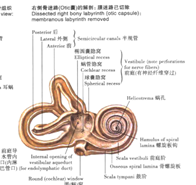

耳科学
疾病名称 | 诊断要点 | 处理方法 | 其他 |
梅尼埃病 | 人群：40~60，男多于女 症状： 发作性眩晕：数十分钟到数小时 波动性渐进性听力下降 耳鸣和耳涨满感 体征：无 辅助检查： 感音性听力下降 纯音听力：早期上升或峰型（高峰2kHz）；晚期平坦下降；阈上重振 耳蜗电图：-SP增大 冷热试验：患耳弱 甘油试验：阳性 Hennebert征：膨大球囊接触镫骨，外耳道压力变化可引起眼震眩晕 | 改善内耳微循环、解除迷路积水和调节自主神经功能 药物治疗和手术治疗
药物：激素；前庭神经抑制药；抗胆碱药；脱水剂
手术： 听力保存：包括前庭功能是否保存两个手术 前庭功能保存：内淋巴分流；内淋巴减压；颈交感神经节封闭； 不保存：化学药物前庭破坏（最有效）；膜迷路破坏；前庭神经切除术。 听力不保存：迷路切除术。
|
|
良性阵发性位置性眩晕 | 症状：体位改变引起的发作性眩晕（1min内） 辅助检查： 变位试验：Dix-Hallpike（后）、侧卧（前）、滚转试验（外） | 抗眩晕药 Epley耳石复位 半规管阻塞、壶腹神经切断。 | 体位改变，耳石异位。
前半规管：前后运动 后半规管：上下运动 外半规管：左右运动
椭圆囊位于水平面，主要感受水平面线性加速度的变化及头部倾斜改变 球囊位于正中矢状面，主要感受矢状面线性加速度变化及头部倾斜改变。 |
耳廓假囊肿 | 人群：青壮年男性 症状：无痛肿胀 体征：三角窝、穿刺黄色液体，晚期机化 | 使囊壁纤维化，防止再次渗出
| 机械刺激→影响血液循环→软骨内反应性渗出 |
耳廓化脓性软骨膜炎 | 症状：耳痛，有全身症状，破溃后缓解 体质症：早期红肿明显，晚期软骨坏死 | 未形成脓肿：大量抗生素； 脓肿形成：切开引流，去除坏死软骨 | 铜绿假单胞菌 |
外耳道湿疹 | 症状：瘙痒、流水、耳鸣、听力下降、耳痛 体征：外耳道皮肤苍白水肿、糜烂、结痂；慢性期脱屑、结痂；反复发作增厚 | 口服抗过敏药 外用激素 | 变态反应 粘膜改变酷似变应性鼻炎 |
外耳道疖 | 症状：耳痛、听力下降、发热； 体征：耳廓牵拉痛、耳屏压痛、外耳道皮肤局限性红肿 | 脓肿未成熟：局部2%碘酊 成熟：切开引流 | 机械刺激、免疫低下 |
外耳道炎 | 急性：耳痛耳鸣、外耳道充血（导致狭窄） 慢性：瘙痒、充血、上皮脱屑 | 避免机械刺激 清洁外耳道 激素或抗生素滴耳液耳浴 激素软膏涂抹 | 机械刺激、免疫低下 |
外耳道胆脂瘤 | 症状：耳闷、耳鸣、听力下降；合并感染剧烈耳痛流脓；侵犯乳突可面瘫 体征：外耳道耵聍样物，白色包膜，鼓膜多完整 | 取出即可，取不出来切开外耳道 | 机械刺激、外耳道自净功能差 |
外耳道真菌病 | 症状：瘙痒、耳闷；合并其他外耳道疾病 体征：深褐色鳞屑物 | 仔细清洁，保持干燥 | 免疫低下、抗生素 |
大疱性鼓膜炎 | 症状：突然发生的剧烈耳痛且迅速加重 体征：松弛部膨起，呈淡黄色或红色，破裂后成暗红色或黑色。 | 大疱未破：尖针刺破 已破仍有分泌物：口服抗生素 | 病毒、支原体 鉴别蓝鼓膜（急性中耳炎） |
急性化脓性中耳炎 | 症状：耳深部搏动性疼痛；耳鸣和听力下降；全身症状。鼓膜穿孔后都可改善 体征：早期松弛部充血，之后弥漫性充血；鼓膜膨出。穿孔位于紧张部 辅助检查： 纯音测听：传导性聋 | 全身抗生素 局部： 未穿孔：1~2%酚甘油 穿孔：3%双氧水清洗+抗生素液滴耳 鼓膜切开 鼻减充血 | 肺炎链球菌 咽鼓管感染途径最常见 中耳腔禁用：酚类药物 |
分泌性中耳炎 | 症状：听力下降（早期因体位改变）；耳闷；耳鸣 体征：鼓膜紧张部内陷；锤骨短突外突；鼓膜为琥珀色或淡黄色 辅助检查： 纯音测听：轻度传导聋（15~20db HL） 声导抗： 平坦（B型）：鼓室积液 负压型（C型）：咽鼓管功能不良 | 急性期抗生素，合并过敏疾病考虑激素 病因治疗 鼻减充血剂 咽鼓管吹张——前提控制感染
【手术治疗】 首选穿刺；液体粘稠考虑切开；慢性者上述方法无效使用置管
置管：鼓膜前下象限2mm放射状切口，置管6月 | 中耳的液体多为漏出液、渗出液和分泌液的混合 传导聋：低调音听力下降 感音聋：高调音听力下降 |
慢性化脓性中耳炎 | 症状：反复流脓；听力下降；耳鸣 体征：鼓膜穿孔，残余钙化 辅助检查：传导聋（内尔损伤可混合） | 引流通畅局部用药，急性发作全身用药 【局部用药】 分泌物较多：抗生素+激素溶液 分泌物较少：乙醇、甘油（有机液体） | 急性者反复发作 耳鸣多为低调（中耳损伤），若内耳损伤则高调 鉴别：慢性鼓膜炎无穿孔 用药前3%双氧水清洗 |
中耳胆脂瘤 | 症状：臭脓；听力下降；眩晕（迷路瘘管）；面神经麻痹 辅助检查：传导聋（迷路破坏则感音） | 手术治疗
| 先天性胆脂瘤：外胚层迷走 后天性胆脂瘤：鼓膜、外耳道上皮陷入股室（感染有关） 后天性胆脂瘤分为继发性和原发性：前者在感染之后，后者在感染之前。 后天继发胆脂瘤上鼓室型居多 瘘管试验阳性提示中耳胆脂瘤 迷路瘘管最常见外半规管 |
中耳并发症 |
| ||
耳硬化症 | 症状：听力下降；低调耳鸣；自听增强；威利斯误听（闹市返聪） 体征：Schwartz征：鼓膜后上象限鼓岬粘膜充血 辅助检查： 林纳：256阴性，512阳性提示早期损伤；均为阳性提示损伤加重 韦伯：偏向患侧 施瓦巴赫：骨导延长 盖莱：阴性，镫骨足板硬化 纯音测听： 早期气导曲线上升（低频气导下降） 镫骨固定则所有频率气导下降（平坦） 卡哈切迹：镫骨足板固定 声阻抗：A型；镫骨固定加重为As型 | 手术治疗最常用 镫骨手术、内耳开窗术
其他：佩戴助听器 | 卡哈切迹：1kHz或2kHz声强突然下降 |
贝尔麻痹 | 三素（激素、维生素、营养素） 手术治疗有争议：面神经减压术，指征为：面神经变性90%以上 | ||
Hunt综合征 | 症状：耳痛；面瘫 体征：疱疹 |
| 水痘-带状疱疹病毒 |
颞骨骨折相关的面瘫 |
| ||
颞骨骨折 |
| ||
鼻科学
疾病名称 | 诊断要点 | 处理方法 | 其他 |
鼻前庭炎 | 急性者红肿热痛 慢性者发痒、灼热、干燥，可见鼻毛稀少和结痂，可影响呼吸 | 首先治疗原发病 急性者热敷 慢性者：痂皮考虑3%双氧水冲洗，后用2%黄降汞软膏 渗出多者：2%黄降汞软膏 皮肤糜烂、皲裂：10~30%硝酸银烧灼 | 鼻分泌物刺激 |
鼻疖 | 危险三角区内的疖 | 没有全身治疗 未成熟：热敷；外敷10%鱼石脂软膏 有脓头：等待自行穿破；用小探针蘸苯酚或硝酸银腐蚀促破溃 碘酊消毒后刺破挑出脓栓 破溃后局部消毒，抗生素局部使用 |
|
急性鼻炎 | 发病初干燥灼热，随后出现鼻塞、水样鼻涕 可有全身症状 |
| 鼻病毒 |
非变应性鼻炎 | 症状：间歇性鼻塞，夜间、休息、寒冷等加重；鼻塞有交替性，变换体位可改变；流涕；打喷嚏 体征：充血；严重者桑葚样变 | 去除病因是前提 激素、减充血剂、抗组胺药 手术治疗、封闭治疗 | 急性鼻炎反复发作 解剖异常 |
变应性鼻炎 | 哮喘在上呼吸道的延续 鼻黏膜苍白水肿 | ||
急性鼻窦炎 | 上颌窦炎：晨起不痛，上午轻，午后重 额窦炎：晨起开始痛，午后消失，周期出现 前组筛窦炎：内眦鼻根深部，规律同额窦炎 后组筛窦炎：枕部疼痛 蝶窦炎：颅底和眼球深部的钝痛 | 全身抗感染 激素，谨慎考虑缩血管药物 上颌窦穿刺：急性上颌窦炎无并发症 | 从这里我们可以关注到临床抗生素使用的规律： 如果感染是发生在皮肤，或者容易引流，具有自净作用的粘膜，是不必全身用抗生素的；但是如果感染发生在不易引流、清洁，或者血流丰富地方，是要考虑全身使用抗生素的。 |
慢性鼻窦炎 | 脓涕：前组鼻窦前孔流出；后组鼻窦鼻咽流出；恶臭考虑牙源性感染 鼻塞 嗅觉障碍 头痛、视功能障碍 | 激素 急性发作才用抗生素 上颌窦穿刺、鼻腔冲洗、负压置换 | 双侧、多窦更常见 常常继发于急性鼻窦炎 前组鼻窦炎脓液多见于中鼻道；后组多见于嗅裂 鉴别鼻窦内翻性乳头状瘤：后者灰红色、灰白色肿块，容易出血 |
鼻窦疾病 |
| ||
真菌性鼻窦炎 | 非侵袭性包括真菌球和变应性真菌性鼻窦炎，后者查体可见呈黄绿色“油灰样”分泌物，部分眼球突出 侵袭性病程短，进展快；鼻黏膜变黑、鼻甲坏死 辅助检查：窦内钙化影；鼻内镜有泥沙物 | 【非侵袭性】 手术治疗是主要手段 使用激素改善粘膜反应状态 【侵袭性】 手术清除坏死组织 抗真菌药物全身治疗 | 曲霉菌>毛球菌 具体病理特点可以参照肺曲霉病 慢性侵袭性真菌性鼻窦炎常见于糖尿病患者 |
鼻骨骨折 | 儿童临床表现不明显，诊断困难 伤后1w肿胀消退复位，不得超过2w | ||
筛窦骨折 | Marcus-Gunn瞳孔：瞳孔散大，直接对光反射消失，但间接对光反射存在【动眼神经损伤】 | ||
鼻前庭囊肿 | 人群：30~50，女性多见 鼻翼隆起、上唇胀痛 穿刺无胆固醇结晶 | 唇龈沟入路，囊腔内亚甲蓝示踪 鼻内生长：考虑鼻内开窗 | 潴留囊肿和球颌突囊肿 |
鼻窦粘液囊肿 | 眼部压迫突出 面部乒乓球样团块 垂体压迫症状 | 手术治疗 | 并发症：球后神经炎、脑脊液鼻漏、眶尖综合征 |
鼻窦粘膜囊肿 | 反复间隙性鼻内流出黄色液体 | 通常自行破溃 |
|
鼻出血 | 反复出血能找到出血点：烧灼法 Little Area出血：鼻中隔粘膜划痕或粘膜剥离 前鼻孔填塞（烧灼无效）：24~48h取出 后鼻孔填塞（前鼻孔填塞不小）：48~72h取出，不超过5d，个别延长到7d | 年轻人：Little Area 中老年：吴氏静脉丛 | |
血管瘤 | 毛细血管瘤：有蒂，鲜红暗红 海绵状血管瘤：广基，质地软，可蓝色 | 鼻内镜切除 术后放疗 | 好发于鼻中隔 |
内翻性乳头状瘤 | 40岁以上 症状：进行性鼻塞、脓涕、有时带血 体征：桑葚状，中鼻道多见 MRI：脑回征 |
| HPV有关 癌前病变 移行上皮最常见 50~60岁发病最多 |
鼻腔恶性肿瘤 | 鼻腔外侧壁多见，鼻中隔罕见但预后好 | ||
上颌窦恶性肿瘤 | 症状：进行性鼻塞、涕重带血
| T1~T2：单纯手术 T2~T4：术后放疗（60~70Gy） 若侵犯眶内或颅内，先放疗再手术 |
|
咽科学
疾病名称 | 诊断要点 | 处理方法 | 其他 |
急性咽炎 | 早期咽部干燥，空咽有咽痛 粘膜充血，滤泡增生 | 一般局部处理：复方硼砂、华素片 必要时全身治疗 | 柯萨奇病毒、链球菌多见 咽部的炎症一般局限在口咽 |
慢性咽炎 | 咽部干燥、浓稠分泌物 充血、暗红色、淋巴滤泡颗粒状隆起 | 病因治疗 急性期抗生素 | EBV和溶血性链球菌 |
急性腭扁桃体炎 | 咽痛（刀片嗓） | 全身抗生素（主要） 局部抗生素和清洁 | A型溶血性链球菌 分类 卡他性 化脓性：包括滤泡性和隐窝性 |
慢性腭扁桃体炎 | 咽部不适，急性炎症反复发作 增大可导致睡眠呼吸障碍、吞咽障碍 | 手术切除 | 增生型、纤维型、隐窝型 和风湿性关节炎、肾炎等相关 腭扁桃体切除以剥离法主要，急性炎症消退后2~3周手术。术后4h进冷流食；6h生理盐水漱口；2d有白膜；5~7d白膜脱落；原发出血24h内；继发出血5~7d【和白膜脱落有关】 |
腺样体肥大 | 反复发作的中耳炎 腺样体面容 | 发病时间短症状轻：激素 手术：内镜下腺样体切除术【小儿0°鼻内镜，70°鼻内镜】 | |
扁桃体周脓肿 | 剧烈咽痛、耳部放射 扁桃体查体化脓感染 | 抗生素、激素 穿刺抽脓：最隆起部 切开排脓：前上：最隆起；后下：腭咽弓 | 金黄色葡萄球菌 |
咽后脓肿 |
| 仰卧头低位穿刺抽脓；引流不畅每天撑开切口排脓，术后使用足量广谱抗生素； 慢性者：抗结核治疗；穿刺抽脓不可在咽部 | 急性者婴幼儿多见 慢性者为结核多见 |
咽旁脓肿 | 颈部僵直 全身症状 咽旁和颈部剧烈疼痛 | 颈部切口：下颌角为中点，胸锁乳突肌前缘做一个纵切口；下颌骨下缘1.5cm弧形切口 口腔切口：最隆起2cm切口 | 累及翼内肌张口困难 累及颈血管鞘致命出血 |
鼻咽血管纤维瘤 | 人群：10~25岁，男性多发 反复出血、骨质侵犯 鼻咽镜：表面光滑的圆形或大结节状淡红色瘤体 | ||
鼻咽癌 | 鼻部、耳部、脑神经受累；淋巴结进行性肿大要充分怀疑 | 放射治疗首选 放射后残留可手术 | 60%淋巴结受累；20%脑神经受累 颈深上淋巴结 本书最容易淋巴结转移的肿瘤 |
喉咽癌 |
| T1N0和T2N0病变可保留喉手术或放疗，其他不保留喉。 | 常见梨状窝癌 |
喉科学
疾病名称 | 诊断要点 | 处理方法 | 其他 |
急性会厌炎 | 急骤起病的咽喉肿痛、吞咽和呼吸困难 | 足量抗生素激素 呼吸道管理 | B型流感嗜血杆菌 急性变态反应性会厌炎及时抗过敏 |
急性喉炎 | 声嘶、喉痛 | 抗生素、激素 | 小儿喉炎可呼吸困难 喉炎好发于声门区 |
慢性喉炎 | 声音嘶哑 喉部干燥 | 治疗原发病，改善用声习惯 | 用声不当 单纯性：弥漫充血；肥厚性：室带肥厚；萎缩性：结痂 |
声带小结 | 成年女性和学龄期男童 声嘶最早最突出表现 |
| 声带游离缘前中1/3 |
声带息肉 | 息肉血管瘤、凝胶透明样 | 手术切除和改善用声习惯 | 声带游离缘中1/3 固有层浅层 |
喉乳头状瘤 | 进行性声音嘶哑、喉喘鸣和呼吸困难
| 手术治疗是目前最有效方法 预防前联合粘连：间隔2~3月分期手术 | HPV6和HPV11 病毒感染的组织学特征：凹空细胞 好发于纤毛上皮和鳞状上皮的移行部位： |
喉癌 | 声门上：先有咽喉痛，侵犯到声带才有声嘶 声门：声嘶、呼吸困难 声门下：类中央型肺癌 | 手术治疗为主 | 声门型最多（转移少，预后好），声门上次之 声门上：颈深淋巴结上组 声门：不易转移 声门下：气管前和气管旁 |
气管切开 | 甲状腺峡部2~4软骨环，若过低，则切开甲状腺峡部结扎； 甲状腺下血管7~8软骨环，切开位置不得低于第5环 气管切开不方便进行，考虑环甲膜穿刺 | ||
临床嗓音学测定 | 嗓音学测定发——唉 观察软腭，悬雍垂发——啊 检查声带梨装窝——一 | ||
耳科学
- 外耳道长度：2.5~3.5cm，外1/3软骨部，内2/3骨部【注意区分咽鼓管：外1/3骨部，内2/3软骨部】；两处狭窄：骨和软骨部交界处，距离鼓膜0.5cm处。
- 迷走神经耳支支配外耳道感觉：迷走神经中有来自三叉神经脊束核的成分。【岩部下方乳突小孔进入】
- 乳突导血管沟通：耳后静脉和乙状窦。
- 鼓室参数：上下径15mm，前后径13mm；上鼓室内外径6mm，下鼓室内外径4mm，鼓岬内外径2mm。
- 鼓膜：前下方倾斜，和外耳道底呈45°~50°角。
- 鼓膜：最突点：锤骨柄尖端（脐部）；锤骨短突：锤骨顶起鼓膜处【鼓膜的突出标志】。
- 鼓室神经系舌咽神经的分支之一。此神经起自岩神经节、经鼓小管下口进入鼓室、至鼓室内壁与交感神经纤维共同形成鼓室丛【下泌涎核→腮腺分泌】。在鼓岬表面。鼓室的另一条神经为鼓索神经，是面神经分支。
- 前庭窗（卵圆窗）通前庭；蜗窗（圆窗）通鼓阶。
- 外半规管：面神经管后上方（鼓室内壁），鼓窦入口内下方（鼓室后壁）。
- 锤骨的运动肌肉：鼓膜张肌（连接锤骨颈，鼓膜张肌半管位于鼓室前壁，向鼓室弯曲构成匙突，在前庭窗前上方，位于鼓室内壁），能够增加鼓膜张力。镫骨肌降低外淋巴压力。
- 砧骨窝（鼓室后壁）：面神经隐窝定位标志，中耳手术定位标志。
- 锥隆起（鼓室后壁）：内有小管（含面神经镫骨肌支）；锥隆起外侧有鼓索神经穿出（来自面神经）；镫骨肌腱由锥隆起发出。
- 岩鳞裂是幼儿耳源性颅内感染的重要原因。
- 鼓室动脉：
a) 上颌动脉鼓室支：鼓室前部和鼓膜；
b) 耳后动脉→茎乳动脉：鼓室后部和乳突；
c) 咽升动脉→鼓室下动脉：鼓室下部和鼓室肌肉；
d) 脑膜中动脉：
- 岩浅动脉：内侧壁；
- 鼓室上动脉：鼓室盖；
e) 颈内动脉→鼓室支：鼓室前壁。
- 舌的味觉：前2/3：鼓索神经加入舌神经；后1/3：舌咽神经→岩大神经。
- 上鼻甲后端：蝶筛隐窝（蝶窦开口）；中鼻甲后端：蝶腭孔（通翼腭窝）；下鼻甲后端（后下方）：咽隐窝。
- 咽鼓管参数：成人35mm；水平面40°夹角；矢状面45°夹角（和鼓膜外耳道夹角一致）。最宽为鼓室口；最窄是骨软骨交界。
- 前庭嵴（如奔驰的车标符号）附近结构：
a) 前庭嵴前方为球囊隐窝：中筛斑；
b) 后方为椭圆囊隐窝：上筛斑、前庭小管（内淋巴管，外口在岩部）内口；
c) 下方为蜗隐窝：下筛斑。

- 半规管的关系：
a) 两侧外半规管共平面，水平30°夹角；
b) 两侧前半规管互相垂直，和同侧岩部长轴平行（纵行骨折方向）；
c) 一侧前半规管和对侧后半规管平行（垂直于两个不同平面的不同两个平面相互平行）。【微量冰水试验：后仰60°，外半规管垂直位；冷热试验：前倾30°，外半规管水平位】
- 蜗孔沟通内淋巴和外淋巴；外淋巴流动方向：圆窗附近的蜗水管内口→蜗水管→岩部下部的蜗水管外口→蛛网膜下隙。
内外淋巴循环：
内淋巴：囊斑、血管纹→球囊、椭圆囊、内淋巴管、内淋巴囊
外淋巴：半规管→前庭→前庭阶→蜗孔→鼓阶→蜗水管→蛛网膜
- 前庭窗通前庭阶；中阶：膜蜗管；圆窗通鼓阶。
- 膜蜗管：上壁前庭膜；外侧螺旋韧带（分泌和吸收内淋巴）；下侧基底膜和Corti器。
- 内耳血管：迷路动脉，茎乳动脉（来源于耳后动脉）。
- 道上三角区（筛区）：定位鼓窦的标志。
- 2岁以下处理耳后骨膜下脓肿慎用耳后切口，容易损伤面神经。
- 弓状隆起底部是前半规管；鼓岬底部是耳蜗底部。
- 内耳道底：
| 上 | |
前 | 面神经管区 | 前庭上区（前庭神经上终末支） |
蜗区（蜗神经） | 前庭下区（前庭神经下终末支——球囊神经） | |
- 刺激外半规管→水平眼震；前后半规管→旋转眼震。
- 球囊斑：额状面加速度；椭圆囊斑：矢状面加速度（“一坨屎”）。
- 内耳道平均长度：10mm。内耳道和颞骨岩部呈90°。
鼻科学
- 鼻前庭（属于皮肤）：前界前鼻孔，后界鼻内孔（鼻阈）。
- 中鼻甲基板：前后组筛窦的分界。
- 鼻道的开口：
a) 下鼻道：鼻泪管；
b) 中鼻道：前组筛窦、上颌窦和额窦开口；
c) 上鼻道：蝶筛隐窝：蝶窦的开口。
- 总鼻道：中鼻甲以下。【中鼻甲以上和鼻中隔之间为嗅裂（嗅沟）】
- 鼻腔和鼻中隔的血管和神经：
a) 血管：
- 颈内动脉→眼动脉：
- 筛前动脉：鼻腔外侧壁和鼻中隔前上部；
- 筛后动脉：鼻腔外侧壁和鼻中隔后上部；
- 颈外动脉→上颌动脉→蝶腭动脉；
- 鼻后外侧动脉：鼻腔外侧壁后部、下部和鼻腔底；
- 鼻后中隔动脉：鼻中隔后部、下部；【进一步分支为鼻腭动脉】
- 颈外动脉→上颌动脉→眶下动脉：鼻腔外侧壁前段；
- 颈外动脉→上颌动脉→腭大动脉：鼻中隔下部；
- 颈外动脉→面动脉→上唇动脉：Little Area；
- 鼻中隔前下部：Little Area、克氏静脉丛；鼻腔后侧：吴氏静脉丛（老年人好出血区）；
b) 神经：
- 三叉神经→眼神经：筛前/后神经，区域同同名动脉；
- 三叉神经→上颌神经：
- 蝶腭神经：鼻后上外侧支（外侧壁）和鼻后上内侧支（鼻中隔）；
- 鼻腭神经：鼻中隔；
- 眶下神经：鼻前庭、上颌窦。
- 翼管神经：
- 交感：来自岩深神经（颈动脉交感丛）；
- 副交感：来自岩浅大神经（来自面神经）。岩浅小神经来自舌咽神经，支配腮腺腺体分泌。
- 神经总结：
a) 岩浅大神经来自面神经，支配腺体分泌；
b) 岩浅小神经来自舌咽神经，是鼓室神经的终末支，支配腮腺分泌；
c) 鼓索神经来自面神经，入舌神经管理前2/3味觉；【舌后1/3为舌咽神经的舌支】。
- 鼻窦淋巴→咽后淋巴结→颈深上淋巴结。
咽科学
- 咽的分部：
a) 鼻咽：C1、C2之前；
b) 口咽：C2、C3之前；
c) 喉咽：C3下部~C6上部；会厌上缘到环状软骨下缘。
- 腺样体：6~7岁最显著，10岁后逐步退化。
- 鼻咽的咽隐窝后外方是腮腺后间隙：走行9~12脑神经、颈内静脉、颈内动脉和颈交感神经节。
- 咽鼓管相关肌肉：腭帆张肌和腭帆提肌：
a) 腭帆张肌：起自蝶骨角棘至翼突根部之间的骨面、蝶骨舟状窝、咽鼓管软骨外侧板和咽鼓管膜板等处的肌肉。 肌纤维向前下方移形成小腱，绕过翼突钩，分散止于腭腱膜。具有紧张腭肌，扩大咽鼓管的作用；
b) 腭帆提肌：起自颞骨岩部基底面和颈动脉管外口前面的肌肉，肌纤维行向前下方入咽，止于腭腱膜。具有提升腭帆，开大咽鼓管咽口的作用。
- 腭咽弓后方有纵行条索淋巴组织——咽侧索。
- 扁桃体表面向内凹陷构成扁桃体隐窝。
- 扁桃体在3~5岁显著增大（注意不是咽扁桃体！）。
- 扁桃体的动脉和神经：
a) 动脉：主要是面动脉的扁桃体支；
b) 神经：上端来自蝶腭神经节的腭后和腭中神经；下端为舌咽神经的扁桃体支。【舌咽神经和面神经在颌面部的腺体、运动、感觉是互补的，原因在于起源核团的互补性】。
- 咽部没有粘膜下组织，粘膜和纤维紧密相连。
- 咽壁的肌层包括
a) 咽缩肌组：上中下，依次收缩助吞咽；
b) 咽提肌组：茎突咽肌、咽鼓管咽肌、腭咽肌（咽上的结构和咽相连，提起咽）：
c) 腭帆肌组（以软腭为核心，除了迷走神经支配腭帆张肌，其他均由上颌神经支配）：
- 腭帆张肌：蝶骨翼突~软腭（开大咽鼓管）；
- 腭帆提肌：岩尖~悬雍垂（缩小咽鼓管）；
- 腭舌肌、腭咽肌、悬雍垂肌。
- 咽后间隙【颈深筋膜中层到椎前筋膜】：两侧咽后间隙不相同，咽后间隙有前后组淋巴结。
- 咽旁间隙【咽侧壁、翼内肌、椎前筋膜之间的间隙】：茎突分为前后两区：
a) 前部：内含茎突咽肌、茎突舌肌，上方和咽隐窝关系密切；
b) 后部：颈动脉鞘和周围神经。
- 咽部的淋巴引流：
a) 鼻咽：咽后淋巴结、颈深上淋巴结和胸锁乳突肌后缘淋巴结；
b) 口咽：下颌角淋巴结、颈深中淋巴结；
c) 喉咽：颈深中淋巴结；
d) 舌根、会厌谷：锥前淋巴结。
喉科学
- 喉部9软骨：环状、甲状、会厌；2×（杓状、楔状、小角）。【20岁后逐渐骨化，65岁可完全骨化】
- 甲状舌骨膜：喉上神经内支和喉上动脉穿过。
- 喉弹性膜：
a) 方形膜（阻挡声门上癌扩展）：上缘：杓会厌韧带；下缘：室韧带；
b) 弹性圆锥（阻挡声带癌扩展）：上缘：声韧带；前方：环甲膜。
- 舌会厌正中襞两侧凹陷是会厌谷。杓会厌襞两侧凹陷是梨状窝。
- 喉外肌：舌骨上肌群和舌骨下肌群。
- 喉内肌【起止点在喉内】：
a) 环杓后肌：唯一的外展肌，声门开大；
b) 环杓侧肌和杓肌：
- 前者关闭声带前面的膜间部，开放后面的软骨间部；
- 后者关闭后面的软骨间部；
【喉返神经前支支配了杓肌和环杓后肌，其余都是后支支配】
c) 环甲肌（喉上神经）：增加声带张力；【喉上神经还支配咽下缩肌】
d) 甲杓肌：降低声带张力，关闭声门；
e) 杓会厌肌：关闭喉；甲状会厌肌：打开喉。
- 喉粘膜大多为假复层纤毛柱状上皮；但声带、会厌舌面、会厌喉面一部分、杓会厌襞一部分属于复层鳞状上皮。
- 声门：前2/3为膜间部，后1/3为软骨间部。
- 喉的淋巴引流：
a) 声门上：颈深下；
b) 声门下：气管旁和气管前→颈深下 。
1 / 2